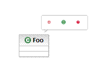

| Eclipse Corner Article |

Summary
Graphical Modeling Framework (GMF) is a new Eclipse project with the potential to become a keystone framework for the rapid development of standardized Eclipse graphical modeling editors. GMF is divided in two main components: the runtime, and the tooling used to generate editors capable of leveraging the runtime. Architects and developers involved in the development of graphical editors or of plug-ins integrating both EMF and GEF technologies should consider building their editors against the GMF Runtime component. This article is designed to help understand the benefits of the GMF Runtime by presenting its various value-added features.By Frederic Plante, IBM
January 16th, 2006
The Graphical Modeling Framework (GMF) is a framework for building modeling-like graphical Eclipse-based editors. Examples of such editors are: UML editors, ECore editors, business process editors, flow editors, XSD editors, etc...
The framework can be divided in two main components: the tooling and the runtime. The tooling consists of editors to create/edit models describing the notational, semantic and tooling aspects of a graphical editor as well as a generator to produce the implementation of graphical editors. The generated plug-ins depend on the GMF Runtime component to produce a world class extensible graphical editor.
This article briefly presents the workflow used to create a graphical editor using GMF and then focuses on presenting the benefits and features of the runtime component of GMF.
Although pictures in this article were taken from screenshots of a GMF Runtime client implementing a UML2 modeling application, the use of the GMF Runtime is not confined to the modeling space since any application that displays and/or edits the graphical representation of EMF models can leverage the framework.
Developers who create graphical modeling-like editors using GMF follow this simplified workflow:
Steps are:
The following UML 2.0 component diagram shows the dependencies between the generated graphical editor, the GMF Runtime, EMF, GEF, and the Eclipse Platform:
As you can see, a GMF graphical editor depends on the GMF runtime component, but also makes direct use of EMF, GEF and the Eclipse platform.
Before delving into some of the features that graphical editors can leverage from the GMF Runtime, lets quickly outline the benefits of basing your editor on the GMF Runtime:
Your graphical editors built on the GMF Runtime have the option of inheriting quite a few very nice features. Below is a non-exhaustive list of such features.
Composite figures within your editor, also often called "compartment" figures, can optionally be collapsed or expanded as can be seen below:
Attribute Compartment Collapsed:
Attribute Compartment Expanded:
Text within labels can be edited directly and interpreted to produce a set of commands.
In the above picture, the user clicked on the name compartment of the UML Class view and started editing the name of the class.

Here, the user created a new operation within a UML Class and typed the full signature for the operation. Upon pressing enter, a command will be executed to generate all model elements required by the signature. Notice the Quick Assist capability this particular client built on top of GMF.
Diagram Assistants are floating user interface objects displayed over a diagram at mouse location after a pre-defined delay without activity, much like tooltips. Their behaviour is capabilities aware and context-sensitive based on the object below the mouse location. There are two types of Diagram Assistant: Pop-up Bars and Connection Handles.
The user interface objects appearing in Popup-Bars are buttons in a bubble-like shape. The buttons are generally used to create elements in the context of the diagram element below the mouse location.
In the above picture, a user left the mouse pointer motionless over a figure representing a UML Class. The Pop-up Bar appeared and offered a list of UML elements to create within the UML Class: attribute, operation and a template parameter.
The user interface objects appearing in Connection Handles are incoming and outgoing floating arrow shape buttons. These can be double-clicked to trigger an action or can be dragged out to create connectors to existing or new objects.
Above, the Connection Handles are displayed beside a UML Class.
Above, we can appreciate an example of how the double-click user gesture over the outgoing Connection Handle is handled. Here, a list of query commands is offered.
Above, we can appreciate an example of how the drag-and-drop user gesture from the outgoing Connection Handle to the diagram surface is handled. Here, a list of connector creation commands isfirst offered and a list of target element creation commands are then offered in sub-menus.
Your graphical editor tool will define its own palette entries, but it may also leverage some of the following tools available from the GMF Runtime:
The Note tool allows the creation of comment boxes on the diagram, while the Note Attachment tool allows connecting a note and an arbitrary shape as follows:
The Geometric Shapes and the Text tools allow the creation of miscellaneous geometric shapes and text on the diagram.
Other tools, such as the zoom tool, are also reusable.
The GMF Runtime makes available a number of standard diagram related menu commands that you can use in your own graphical editor.
The Font menu command will invoke the system font dialog and is used to modify the font associated with the selected diagram element.
The Fill Color and the Line Color commands will apply a color to the selected diagram element's interior and lines respectively.
The Line Style commands will modify the routing style of the selected diagram connector element to one of: rectilinear, oblique or tree style routing.
The Select commands will selected all diagram elements, all shapes, or all connectors.
The Arrange commands will apply a layout to all diagram elements, or to the selected ones only.
The Align commands will align all selected diagram elements to: the left, the right, the center, the top, the bottom, or the middle of the selection.
The Order commands will re-order the selected diagram elements to: the front, the back, forward once, or backward once.
The Auto Size command will reset the size of the selected diagram elements to the default size, usually just enough to see an embedded label within the shape.
The Make Same Size commands will set the size of the selected diagram elements to the size of the last selected element, either horizontally, vertically, or both.
The View commands will show or to hide various diagram features: ruler, grid, page breaks, as well as controlling the snap to grid behaviour.
The Zoom commands will change the diagram zoom to one of: in, out, 100%, To Fit, To Width, To Height or To Selection
The Apply Appearance Properties commands will copy various appearance properties, such as fill color, of the first selected diagram element to the other selected ones.
Advanced toolbar controls are available to support the commands accessible from the menu bar.
The above toolbar shows the following commands:
Changing the zoom level or layout results in a nice animation that ease user's perception of the spacial movement.
The GMF Runtime component also offers a default implementation for the editing of appearance related attributes applied to diagram elements using the Properties View.
The above displays properties of a standard shape.

The above displays properties of a standard connector.
Using the GMF Runtime component, your graphical modeling tool inherits many print related features:
Another freebee is the ability to support multiple export formats such as SVG, GIF, BMP, and JPEG:
The GMF Runtime supports the system clipboard. The following screenshot shows a Windows paste special dialog demonstrating the formats made available by the GMF Runtime during a copy operation.
The GMF Runtime represents an amazing opportunity for the community to reuse high quality standardized components for Eclipse-based graphical modeling editors.
While the initial release of the GMF Project coincides with the release of Eclipse 3.2, you don't have to wait that long to use it. GMF already includes tutorials, examples, and javadoc. Also, API changes are communicated on the development mailing list. Create your first GMF-Based editor today and start taking advantage of its many benefits. Even better, help us enhance GMF by contributing to it!